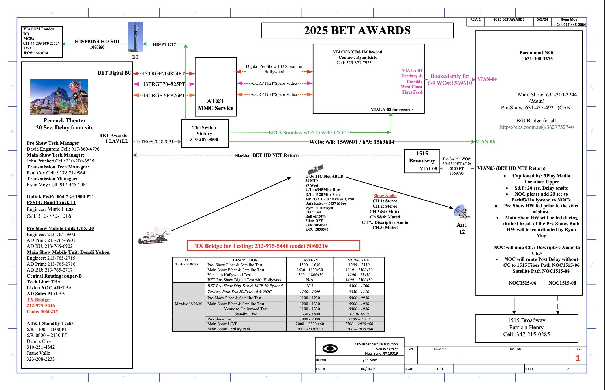

Live Events
During my time at Paramount, I was exposed to the high stakes live broadcasting environments for the BET and Kid's Choice Awards.
BET Awards (6/9/25)
The BET Awards is an annual celebration recognizing Black excellence across entertainment, including music, sports, and culture. The 2025 ceremony took place on June 9th and was hosted by Kevin Hart. The event feature a live pre-show beginning at 6:30 PM EST, followed by the main broadcast from 8:00 PM to approximately 11:30 PM EST. Involvements: real-time monitoring, live event coordination, and collaboration with the technical operations team.

Logistics: Three separate control rooms were utilized. Domestic feed, International distribution, Broadcast for Brazil
Key learnings here included broadcast delays, show formats into segments, with teams continuously monitoring timing to determine whether promotional content should be inserted or removed to maintain the overall runtime and keep the show on schedule.

Kids Choice Awards (6/21/25)
The Kids' Choice Awards (KCA), an iconic annual awards ceremony presented by Nickelodeon. The 2025 ceremony began at 8:00 PM EST and concluded at approximately 9:30 PM.
Similar to the BET awards I worked behind the scenes in the control room doing live checks for audio and video before the show started coordinating with teams on-site in LA. Before the event itself I got to sit in on production meetings where semantics such as where the "bug" would fall on the screen were decided Through this experience, I gained valuable insight into various post-production processes, including how a live show is edited for re-airing in PST after the EST version airs. High-level problem-solving within the broadcast industry, an essential skill in fast-paced, high-pressure scenarios. One of the most impactful takeaways has been learning how to remain composed and make quick, informed decisions during live events.
In addition to being focused on the monitoring my co-intern and I put in predictions for each category beforehand. We were actually pretty spot on with a lot of them! Overall a great time working with the team and insight into the backend of production from the cable side.